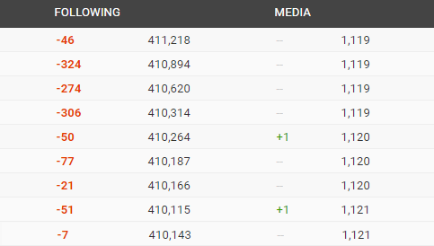
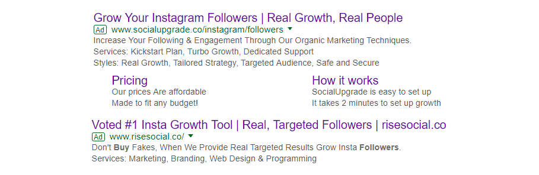
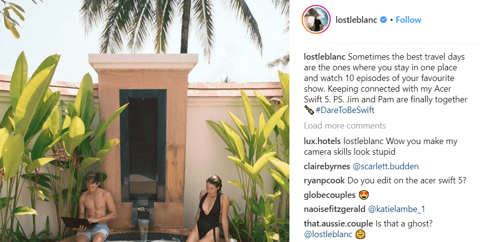
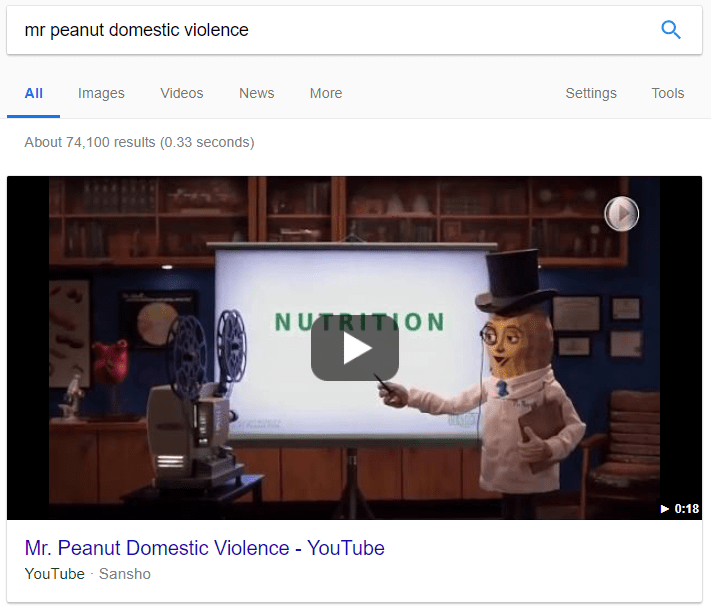
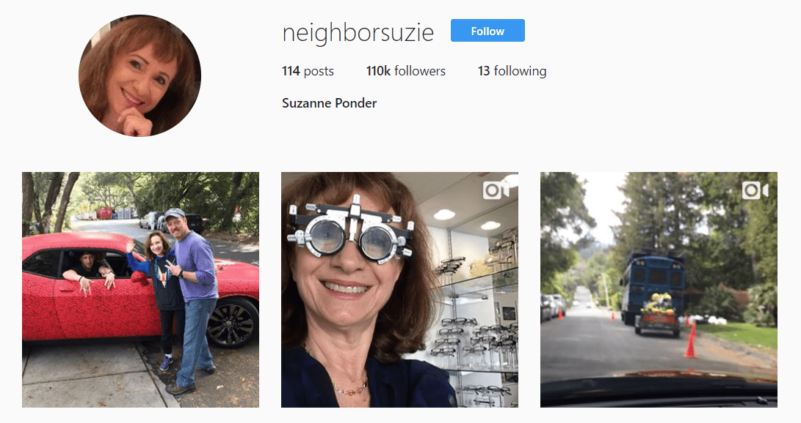
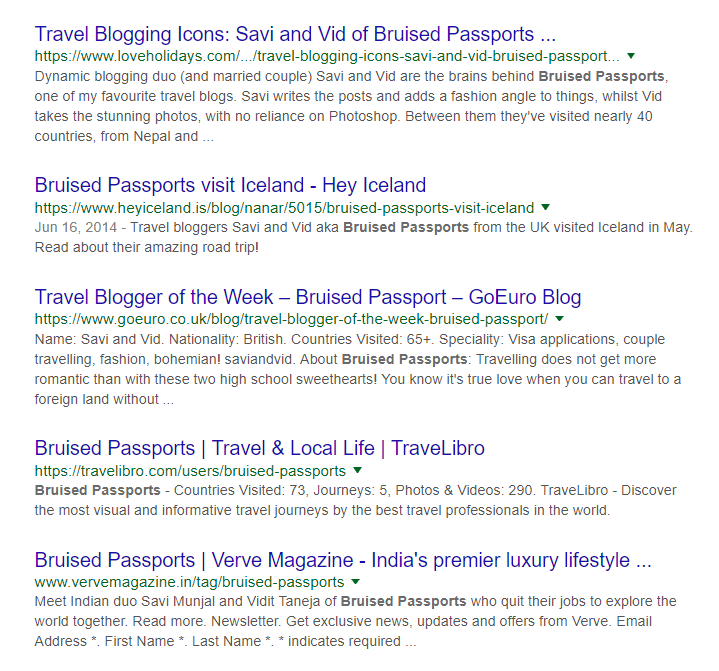

The Instagram Game Vol.1
How To Get Followers On Instagram (2018 Update)
If you’re serious about Instagram, you NEED to keep up with latest techniques that can help you grow your fan base.
Why?
Well, with ever-changing algorithms and updates, whatever worked back then may not bear fruit today or even worse, result in deadly consequences.
In today’s guide, you’re going to learn everything you need to know to go Insta famous.

Introduction
With over 300,000 members within the Wolf Global Instagram engagement groups – we have constant requests for articles and eBooks about bots, automation and engagement pods by our members. In this article, we will talk about it all, and rest assured, there are not going to be any fairy tales here. All the content we’re providing is based on nothing more than facts, data and a beautiful thing they call logic.
Some of the topics discussed in this article you may be familiar with and others you might not have heard of yet. In either case, it is imperative that you are well informed on what can make and what can break your Instagram journey.


CHAPTER 1
Instagram Bots Explained
All that you’ll ever need to know about bots, how they work and why you really shouldn’t be using one
What They Are
I’m going to start off by saying that it is imperative you have a strong inner game to go Insta famous. By this, I mean that you must always focus on where you want to be. Sure, some ways will get you quick likes, and a few follows – but to what end? I’m not going to sit here and give the same old story in a fresh wrapping. My sole aim in writing this article is for you to understand and see things differently. For you to think like a famous person, to act like one and then in good time – be one!
For you to understand how things work, you must realise how they used to be and how they have changed. In knowing the past, you will be better prepared to face the present day and future trends and use them to your advantage. And it is for this reason that I want to start by talking about bots.
Ever since social media networks started to take over the world, coders have always been into finding ways to automate those networks to gain fame. Automation bots are nothing more than a piece of software that you use to automate your actions on a social media platform. Automation bots came up long before Facebook and Instagram. Even in the early days of MySpace (the first social network), people would use scripts and bots that would mass follow millions of users at a time. The aim of these bot users can range from getting attention to their profile to getting attention to their ad link in the bio and so on. Nevertheless, automation with bots and scripts has always been there, more so now than ever.
In the context of Instagram, an automation bot can help you schedule your posts, follow people based on hashtags and locations, send automatic DMs and so much more. You mainly buy software that you install on your computer, and within this software, you log-in your social profile, and you set specific actions and let it do its job. It can be that you want the bot to auto follow people based on hashtags, it can be that you want the bot to like on posts of a specific location tag and so on.
Bots can come in the form of software that you buy a license to, with a one time fee or they can come in the form of cloud web-based bots that you subscribe to. Cloud-based bot services naturally allow users a more comfortable on-the-go access to automation of their accounts, while software-based bots are preferred when it comes to the pricing, as they are usually a one time purchase instead of an ongoing subscription.
What They Are Used For
Back in the peak days of automation, people would use these bots to pull off an infamous and annoying yet successful technique: follow, unfollow. How you do this is by setting the bot to follow, say 10,000 people per day based on parameters such as hashtags, accounts followed and location, and then set it to unfollow them at a later point. How this technique achieves results is that the people who you follow will notice that you have followed them, and these people are likely to check out your profile, and if your content is of a niche they are interested in, they might follow you. You may not get the full 10,000 people that you followed as followers, but this technique did, in fact, prove itself to be successful. For the most part – you are bound to get a ton of pity follow backs to your profile.
In all honesty, follow unfollow in itself is not a bad strategy at all, that is, if you are doing it manually via the Instagram app. The problem comes up when you use bots in this time and age to automate this, as these bots require you to share your Instagram logins with them and in doing so you are taking full risk of getting flagged by Instagram, or worst hacked. We’ll be discussing more of this in the upcoming sections.
An example of using bot would be to target a person within your niche who is famous and then targeting his or her fans by liking and commenting on their posts. If I were a travel niche Instagrammer based out in Canada, then I’d try to set the bot up to extract followers of a famous travel personality on Instagram who is also Canadian, and then I’d have the bot like and comment on these peoples’ posts to get their attention. In doing so – I’m reaching out to people who are interested in my niche and probably relevant to my location, and the chances of them giving me a follow as a result of me following them and engaging with their content are pretty high.
In the early days when Instagram was in its infancy – it was the wild wild west. Believe it or not, there were virtually no limits or restrictions on anything at all. People could follow millions of profiles in a matter of months and gain a ton of followers back by the use of a bot.
Why this is important for you to understand is to build your inner game. Remember that not everyone started out at the same time as you. Many of the Instagrammers have been on the platform much longer and had the advantage of a time when algorithms and limits were non-existent. I do not want you to get discouraged when you see someone with a million followers and feel weak. It is not fair for you to compare yourself to someone who came at a time when everything was possible.
While the majority of the people did follow and then unfollowed at a later point, some of the accounts doing this got stuck in the process when Instagram overnight made a limit on the number of accounts you can follow and unfollow per hour and per day. As a result of this limit by Instagram, some accounts were left with hundreds of thousands of followings, and now they cannot do anything but wait out years to unfollow all that mass population that they have followed using a bot due to the new limits imposed by Instagram.
See screenshots below.

An example of follow unfollow method – but in case they didn’t unfollow quick enough, and Instagram made the update that made it impossible to mass unfollow at the speed of light. In the next image, you can see how the owner of this profile is unfollowing people every single day, to rid of this massive number of people that he followed using bots.
@HighOnLife

A bit of research and tracking shows that the profile owner is trying their best to unfollow people on a daily basis.

Another example of follow-unfollow method gone wrong.
@BeautifulWorldTree
Its Not The Same Anymore
My purpose in showing you these examples is to give you hope and courage towards your Instagram journey. Everything looks fancy from the outside, but a bit of digging shows you that things aren’t as simple. Believe it or not – even some of the top brands used to do this back when Instagram was starting to get famous. Lucky for them, that they used to unfollow their followings in a couple of days and stay under 1000 followings at all times.
I want you to understand that pulling off such techniques to get famous was pretty standard back in the days. People used to follow 3 million people in a matter of months and get 1 million followers back. And later they’d unfollow. Precisely who all did this can never be known – however – lucky for us that we were able to find some examples of this as seen above.
In the present, you cannot follow more than 7500 people on Instagram, and if you use a bot to follow and unfollow, you can bid your engagement a very good bye. Not only are there hard limits on the max number of people you can follow per account, but there are also daily and hourly limits on Instagram that you might have come across when on a liking or following spree. It is this reason the accounts in above example are not able to unfollow their followings and are doing it gradually. Its a pity that Instagram came up with limits overnight without any notice and millions of profiles like above were stuck with hundreds of thousands of followings.
I hope you are starting to see a pattern here. A trend in change of algorithms and limits.
While there are millions of people, who are still doing follow-unfollow methods using bots even today, I do not recommend this. If you are a seasoned Instagrammer, you of all people would know just as I do, on how difficult Instagram is becoming regarding rules, regulations, algorithms and community guidelines.
How They Exactly Work
So – how is it that you enter your Instagram login onto a software or a website and they can automate your account?
Have you ever gone to a hotel or flight booking website to plan your trip? In doing so, you pull the rates of 1000s of hotels that are sent all to that one website. You’ve probably wondered how is this one website able to pull room rates of 1000s of hotels instantly.
They do this by what we call – application programming interface, or API. The booking website communicates with the hotel sites via an API (a method of communication) to pull data. So, when you search for flights from New York to Dubai on Sky Scanner – you get 100s of options from different airlines. During the time the page is loading and results are being populated, the website, Sky Scanner contacts all the airline websites and requests for a rate and then shows it to you. And to look at this from another perspective, Sky Scanner ideally has API keys to all airlines which grants Sky Scanner the ability to pull rates at any time and for any user. And it goes without saying – the airline companies obviously know which third-party website is requesting which data. In an example, if Sky Scanner is pulling flight rates for Emirates Airlines, then that airlines has complete knowledge of all the data exchanges and transactions.

A quick video on what an API is and how it works.
The Problem With Bots
Okay now let’s get back to Instagram.
In a simple example as seen in the video above, API is like a waiter in a restaurant who communicates your order to the kitchen. And now tell me something, would you? Whatever it is that you order with the waiter, the kitchen (the chef) will come to know of it, isn’t it? Whatever it is that you placed an order for, will, in the end, reach the kitchen. Keep this in mind as I take you through where the problem lies in using bots in current time and day.
When you use a bot to log into Instagram, you are connecting to Instagram via an API. Naturally, Instagram has easy access to data to know which accounts log in directly through the app, which ones are connecting via browsers and which ones are connecting via API. Since Instagram is hugely against usage of bots – any connections that are established by an Instagram account to the network by the use of an API is immediately tracked for any automation activities. In a case where you log in via a bot, and you do not partake in automation of actions like following, unfollow, post, comment, like and DM – then you are safe to log in via bot. The simple reason for Instagram to give access to coders to its API is that Instagram is not against third-party coders developing apps for Instagram that are within the Instagram ToS. A simple example of this would be analytics companies like Social Bakers.
And back to our example, you as the user on Instagram, using bots to automate and spam the platform is something that Instagram will come to know immediately. It is unreasonable to think that Instagram, being the company that it is, is not tracking your every move, especially if you are connecting behind a mask of a bot and via API.
If and when Instagram algorithms detect that you are using APIs, a bot, to automate your profile, Instagram will slowly and steadily start to flag and limit your account to the point that your Instagram account is doomed. It is completely fine if you are tracking your post analytics or using an API for corporate community management purposes – Instagram has no issues with that apparently. It is when you pull spam tactics that you run into a trap.
Up until 2016 Instagram had turned a blind eye to all these tactics, however, as time passes by, it is becoming more evident that Instagram is penalising those who are logging-in via API to automate their profile.

Mass Planner, an infamous Instagram web bot that had millions of users was shut down in the early 2017 during Instagram’s witch-hunt of bot services. Click here to read the full article.
Don’t get me wrong. You can still use bots to do follow, unfollow. You can probably gain a few real organic followers too. I do not doubt that. I have personally used every Instagram bot that exists. Yes, it helps. You can surely gain a few hundred real followers every week if you set it up the right way and have exciting content. However, to what end would you want to do this? You know Instagram is tightening its screws on community rules. You know how Instagram has some covert tactics like shadow-banning and God only knows what else that can affect you without your knowledge.
And why shouldn’t Instagram penalise you? It is you who is responsible for the scenario of using bots and software to automate your account on a platform that explicitly asks you not to do that in its terms and conditions.
The Red Flag
First off it is entirely illegal by Instagram’s terms and conditions to use automation methods. But let’s ignore that; there are a lot of grey areas in all network terms, and it doesn’t hurt, does it?
Well, it does when you are responsible for it.
Think of it like this – Instagram on the web is so limited when compared to the features of the app. That’s a reflection of how they feel towards web-based networking: it’s not a priority or interest of theirs. Now, you think they’ll take it easy when people start to use cloud-based bots to automate?
The problem here lies in the fact that you are willingly giving away your login details to a bot or a third-party service that is supposed to grow your account organically. But they do so by violating Instagram’s terms, and for that, Instagram will hold you responsible.

Instagress, another prominent bot service shut down in early 2017. Click here to read the full article.
Back in early 2017 Instagram started out on a witch hunt and forced some of top bot automation services to shut down. It is imperative that you realise that shutting down these bots and penalising their users is something that Instagram works on continually.
Remember – Instagram is smart enough to see who logged in via API and is automating their profile. And more importantly, Instagram is cracking down on spam tactics. Be it mass DMing or mass commenting or mass following. Its the exact moment when you automate via a bot that your account will start to get penalised.
Organic Growth Agencies
You may be aware of this, but there are a million websites and social media agencies that promise real organic growth, account management services and so on for a monthly subscription. You can find a million such sites right now on Google.
If you’ve ever come across fancy websites that provide services that gain you real Instagram followers and they require your login credentials, just remember how they do it. They’ll login to a bot using your credentials, set a few automated actions like following and likes, and let it do its job. It takes 2 minutes to set this all up, and it costs virtually nothing to the providers while putting your account on the path to destruction, and charging you an arm and a leg for it.
And now, I believe that you are armed with the knowledge of how things work within these growth agencies. While they make it appear that they will provide you with a dedicated ‘brand manager’ who will understand your niche and your locations and what not, what they are asking for is information that they can enter into the bot to set your account up for automation.

A quick Google search for Instagram growth related keywords returns various services that promise amazing things for as low as $79 a month. And the best part about it? None of them clearly mention that you need to give them your Instagram logins and that they will use a bot to follow and unfollow. Rest assured that if you ever have or will sign up for these services, you’re better off giving your account up.
Summary
- Bots worked back in the day. And almost everyone who wanted a quick way to the top used it. Don’t get me wrong, there are plenty of bots that work to this day, but the stakes regarding risk are way higher for you to get into such tactics. Using bots will get your Instagram account flagged and affect your account’s visibility, reach and engagement.
- Don’t be disheartened when you see people in your niche doing better than you. We can not know what they did whatever it is that they did to get famous. It was a million times easier back in the day. Some people got a head start, and you cannot sit and compare yourself with them.
- Never sign up for any services that require you to hand over your credentials. The moment you give away your login details is precisely when you have ruined your Instagram journey. Say no to bots, to auto round bots or any bot, web service and software that requires your login details
- And most importantly, remember that whatever it is that you do, keep in your mind an end goal. Do you want to be famous? Do you want people to recognize you when they see you at the mall? If that is the case, then using botting methods with current limits will get you nowhere. I want you to act like a famous person and do the things that they would do. If you are too stuck with the mentality that gets you pity follow backs, then you’re going to have a hard time getting famous.
CHAPTER 2
Power Likes: A Fairy Tale
Find out what they are and why you’re better off without them.
What They Are
With over quarter million members in our Instagram engagement pods, we always get many requests for services, groups or products for our Wolf Global shop. One of the top products we got asked about quite a bit is Power Likes, something we currently don’t offer, while we can easily add it to our shop if we wanted.
Power likes is a bit of a hot topic, and many of our members are unable to wrap their heads around power likes, and for that, let’s talk a bit about these power likes and break down what exactly they are.
Power Likes are branded as an auto like service where the buyer’s Instagram account gets X amount of likes every time they published a post on Instagram – usually within 15 minutes of posting. What differentiates these Power Likes from another product called automatic daily likes is that the likes, that these power likes agencies deliver are allegedly from powerhouse accounts, meaning, accounts that have anywhere from 10,000 all the way up to 5 million followers. And for this reason, they charge up to 50 times more than what an average auto likes package costs.
Suppliers of such services will make you believe that the accounts which give you likes, the power accounts, are a hundred percent real and active. And apparently, such likes will make your post go viral on Instagram and reach the discovery (also known as explore) page of Instagram, from there on they say that you are bound to get hundreds and thousands of followers and engagement.
The whole concept of Power Likes is more of a fairytale if anything, a comedic one. It’s too good to be true, isn’t it?
Digging Just a Bit Deeper
I have personally tried and tested various such services even though the idea of it sounded hilarious from the get-go. Nevertheless, having seen this in action first hand has brought me to write this section.
The agencies selling Power Likes say that they have 1000s of accounts, each of which has anywhere between 10,000 all the way up to 5 million real and active followers and let’s assume that they do. Our simple question is, who are these selfless bloggers and influencers with such a massive real Instagram fan base that are giving up their account logins to these agencies so that these agencies can then abuse these real accounts via bots to give auto likes to anyone who is willing to pay?
Are you starting to see a cause to my speculation?
Power Likes is the idea that everything they do is real, and for that, they charge you above and beyond what is reasonable. You’d hear such agencies say that their accounts are real, the followers of these accounts are real and the followers and reach that you get out of this game is real. Well, I don’t think so.
Back to our question, why are REAL Instagrammers who have hundreds of thousands of followers on their account – which ideally means that they are super famous – giving these power likes providers their accounts to profit off of while having their accounts abused?
It doesn’t make sense, does it?

Too Good To Be True
If you had 100,000 real Instagram fans, would you give your account to a company for them to abuse via a bot, let alone give up your credentials to them so that they can use your account to give likes to anyone who is ready to pay? Obviously not! More shocking is that these power likes comes by automation as they are promised to reach you within 15 minutes of you posting on Instagram – so there is no way in hell that these are real people on their phones waiting around the clock to catch your latest post to double tap on. No, these accounts are jacked up via a bot that keeps tracking for posts by customers and delivers likes whenever a new post is fetched.
Growing a real fan base of 100,000 and above followers is extremely valuable and challenging. No one in their right mind would give it away – unless – they sign up for a growth service as we discussed in previous chapters and gave away their credentials to companies that are waiting to exploit and abuse. And here you see why we say that 99% of the growth agencies have secondary companies that they use to sell your accounts’ engagement at a premium. You can never know what your account is getting into once you hand over your credentials. I have personally witnessed various auto round providers do this too. These services get you signed up for a premium, and they sell your account’s engagement without your knowledge via a secondary company.
An influencer with upwards of 100,000 followers is pretty much famous and would have a never-ending stream of brands that would be dying to work with them.
Let’s take a look at the accounts that give us these ‘power likes’ as I have tested a couple of services myself lately. I would not deny, around 1% of the 500 likes that I got looked like they came from real people accounts for whom I feel sorry for someone somewhere is exploiting them. For the most part, 97% of the 500 likes that I got were from fake accounts that had copy paste material, fake followers and were pretty dead in terms of engagement. The remaining 2% of the likes is what fascinates me the most. See screenshots below.


Something weird happens when you look at these ‘real and active’ Instagram accounts. Their engagement rate does not add up at all. 318,000 followers and 1000 likes? Pretty odd. Do take notice that the accounts are also copy paste fake accounts with no face, no story – basically a bot account with tons of fake posts and fake followers.
What Really Happens
Now that it’s all out there let’s forget about all the mechanics and for just a second focus on the fairytale and the results that they deliver.
First, they promise guaranteed growth in followers, extreme increase in reach and impressions, and if your content is excellent, they say you’d get revenue and business for yourself by using Power Likes.
Well isn’t that just too good to be true?
When you get down to the core process of it, you begin to see that Power Likes packages are nothing but a combo of auto likes + auto impressions + auto followers packages. These agencies make it appear that the likes from fake power accounts are bringing you real followers and impressions, when in fact, they are just pumping fakes on the side and lying to you about it.
A real Instagram account that has 300,000 followers is worth so much that it would never sign up for any power likes bot system. And above screenshots show you that they do? Can you smell something fishy? Add to that the fact that the engagement rates on these accounts are not adding up. And I have personally seen these same accounts on other engagement pods trying to gain likes and comments. So, basically, from the little 1000 likes that you do see on the post, probably 99% came from engagement pods, which in turn means all their followers are fake. Fascinating isn’t it when you dig a bit deeper?
Power likes is a brilliantly designed scam. First, they send you likes from large fake accounts every time you post. Next, they drip you fake followers and impressions too – giving you the idea that everything that you are gaining is, in fact, organic and natural and a result of these power likes.
With automatic daily likes, neither do we at Wolf Global or other reputed suppliers promise increase in followers and guarantee entry to explore page. The aim of automatic daily likes is to push you towards top post page of your hashtags. And that is where it ends. It would be pretty fascinating to any buyer to have likes that guarantee growth in followers wouldn’t it? Just remember, if something sounds too good to be true, it probably is.

An example of what an account with real followers can do. Lost Leblanc has 274k followers – and in comparison to the fake power like accounts, you can see how his engagement is much higher and at a reasonable 8 to 12%. Additionally, if you haven’t guessed already, being someone that has 274k followers, LeBlanc has worked with countless top brands, hotels, travel boards – all of whom are willing to pay a fancy fee for promotion. And this comes to show that no one with such an account would ever, not even in a million years, give away their account to a bot network for power likes.
Summary
- Power likes are probably something you should stay away from. It’s nothing more than a well-designed scam.
- All the growth that you get from power likes be it followers or impressions, they are faked.
- The idea that you’ll reach the discovery (or the explore) page is pretty much nonsense. Explore pages are not constant and are tailored to each user. No one can guarantee you a spot on explore page.
- When looking for real likes from real accounts of real people, look no further than joining Wolf Global’s Power Likes groups ranging from 1K Power Like pods to all the way up to 500K+ Power Like pods. And – as you may know – our pods are 100% free forever. And as you’ll see within our power groups – even if you get 100 likes from 50K+ accounts and take note that these accounts are actually real people profiles – regardless – you’d not see any magical effects from it as you’d see with the power like agencies’ scams.
CHAPTER 3
What Rounds Are
Everything you need to know about Instagram round groups and what really happens in them.
Instagram Round Groups Explained
With so many different types of engagement groups popping up on every platform out there, there is something that you may have come across called Round groups.
Round groups are similar to any of Wolf Global pods with the difference being that the engagement in these groups happens at set time frames. There are certain scheduled times throughout the day during which everyone drops their links, or Instagram handles into the group. The bot prepares a compiled list later on and once completed it is sent out to all participants to catch-up within a time limit.
Simply explained, instead of ongoing engagement happening throughout the day like classic pods, everyone in a round group comes together at a set time, drops their links or Instagram handle when the round opens. Once the round closes, a link list is prepared and everyone who took part has to participate. This all happens within a reasonable time. Let’s say that the round opens at 3 pm, by 3:30 pm it closes, and within minutes the list of links is compiled. Groups have anywhere from 20 to 120 minutes to complete engagement depending on the number of members. Anyone who fails to reciprocate is automatically banned from further participation.
The Problem
Rounds are a brilliant way to get to dance with the Instagram algorithm if done right. The only issue with most rounds pods, which drove us to create Waves, is that there is little control or regulations other than simple timeframes to keep integrity with engagement swapping.
The primary issue we and most our top members have with rounds is that members within these round groups have the option to swap accounts, meaning if they want likes on a post from account X, they are free to give likes from account Y. And it is because of this clause that the majority of participants, some boasting hundreds of thousands of followers have a lower ranking secondary or backup account that they use to give engagement in a round group.
Additionally, it is a bit weird for any post on Instagram to give and take 1000s of likes at set times. It would be too easy for Instagram to know something is up. Imagine you give and take 1500 likes every day at 12 PM, 3 PM and 6 PM. And it goes on and on. It’s too large of a foot-print, don’t you think?
The Red Flag
99% of the people in these round groups use fake dummy accounts to give likes and ask to get likes on primary accounts. Let’s talk about why such a setup doesn’t work.
What happens if everyone uses a fake dummy account to give likes? It becomes a game of taking and giving useless engagement at the end of the day.
Another big issue with most round pods is that they care about quantity instead of quality. Some of them have bigger spot availabilities with fewer controls on the accounts that sign up to participate, which means there is the potential for fake accounts. The more prominent rounds pods also have a lot of traffic in rounds, sometimes requiring your account to give likes to 1500 posts within a matter of 60 minutes. This, by all means, is the best way to abuse your Instagram account and get it flagged for overactivity. Most people find it impossible to complete the liking within 60 minutes manually, for obvious reasons, so they opt to use services that automate the liking. They either pay a round service provider a monthly fee or pay to use a bot by themselves to complete the link lists at every round.
And here you see that red flag – you’d have to share your login credentials, which we outlined as not being ideal, and then add to that the fact that you’d like 1500 posts up to 3 times a day. And that is just downright insane.
There Is A Way
At Wolf Global we decided to launch a concept of Waves which works similar to rounds but with some core controls and requirements like no swapping of accounts and only entertaining real bloggers and influencers on Instagram with 5000+ followers. Our Waves are exclusively for real people with faces who are super active and preferably actual real-time influencers.
The concept of waves allows you to get ~500 likes with each wave, from REAL and ACTIVE Instagram influencers and bloggers. All with 5000+ real followers, those who have daily uploads on Instagram and so much more! This concept will out rule the fairytale of Power Likes all the while removing the risks and deceptions in a traditional round group.
The beauty of the Waves concept is that you’ll never be required to use a bot that requires your logins, or have to sit there frantically liking each post. Instead, you’ll use our auto liker extension on Google Chrome that does not require your login. Our auto liker works by having you login safely and directly into Instagram.com and running the extension that does nothing more than automate the double clicking for you at a slow and natural pace. The best part is, it’s going to be 100% free forever!
On top of all that, we limit each round to only 500 members and generate a dynamic list, meaning, no two users will get the same list, a dynamic adjustment of 10-20% happens automatically to make things natural. And the biggest most important catch is that our round groups only allow specific relative niches which will include Fashion, Beauty, MUA and Lifestyle profiles only. Now that is a treat, isn’t it? Engagement from niche specific accounts that are owned by real people with real faces.
NOTE: Even with the setup of Waves as we have them and as neat as it may be, it doesn’t guarantee any massive growth or a spot on explore page. As I said, at Wolf Global, we don’t sell fairy tales.
For more information on Wolf Wave, click here.
Summary
- Round based groups are great to use but be sure to take part only in ones that are specific to your niche or else there is no point.
- Of all the things, just be sure not to join any round groups that allow swapping of accounts. Such a setup is a recipe for disaster.
- Never ever use bots to complete rounds. And avoid mass liking spree when doing rounds. Stick to those rounds that cap out at max 500 members or even lower.
- If you’re enjoying the article so far then be sure to join our Waves group by subscribing to our newsletter here. You’ll be given entry via mail in a couple of weeks once you’ve subscribed.
- Most of all, never ever, under any circumstances use auto round bots and services.
CHAPTER 4
Buying Followers and Likes
There is a reason why everyone from celebrities to politicians buy it. Find out why.
Who Is Buying?
The million-dollar question we’re always asked is if your account gets flagged when buying likes, views and followers.
DISCLAIMER – At Wolf Shop we do have various services including Instagram followers. Take that for what its worth before you read further.

When news agencies audited Katy Perry’s Instagram followers in 2013, they found that a giant 46% of them were actually fake accounts—and another 40% were totally inactive. And it doesn’t end there – click here to see how many of her 90+ million Twitter followers are fake.
Face it or hate it – almost every single celebrity buys a ton of fake social followings for all platforms. Rappers on YouTube don’t get 100 mil views within the first week out of thin air either. For more on this read this article. Wondering why they do it? Its simple. Its cause they can.
Face it or hate it – almost every single celebrity buys a ton of fake social followings for all platforms. Rappers on YouTube don’t get 100 mil views within the first week out of thin air either. For more on this read this article. Wondering why they do it? It’s simple. It’s cause they can. And they know something you don’t. A little something known as ‘social proof’.
Lets cut right to the chase. The logical thing to question is – if Instagram does flag those who buy followers and likes, wouldn’t it be easy for everyone to take their competitors accounts down?
Lets back up a bit. The thing with buying likes and followers is that your login details are not required. So – you can virtually buy likes, views, followers and anything else you want for anyone in the world. Now imagine if Instagram penalised the receiver of these followers and likes, that would mean that with a bit of money, you could get all your competitors flagged by just buying them some followers.
As explained earlier, as long as you do not give away your credentials your account is going to be safe. There is no concrete way for Instagram to determine who the purchaser of followers was. And the day they start to penalise the receiver of these services is the day Instagram will shut down.
The Logic Loophole
Imagine for a moment that you are an interior design influencer in Birmingham. You have ten competitors who are doing well. If Instagram were to penalise and flag anyone buying followers, then all you would have to do is purchase 100k followers for all your competitors and slowly watch their Instagram presence die.
Next question comes is that if fake followers or likes hurt your engagement – and the answer is the same here – if that were part of the algorithm, then Instagram would have been shut down by now. We could ruin all our competitors’ engagements by buying them tons of likes and followers day in and day out.
Are you a traveller? Got some competition? No worries – buy them a ton of auto likes and kill their engagement. Spend a few hundred dollars to watch them burn. It cannot be that simple you see. With such conditional algorithms, social media networks would have never survived.
And that goes to show why buying followers and likes can never hurt your account. Not in a million years. No wonder all the celebrities, politicians, musicians and influencers are buying.
Social Proof Trumps All
If you ask us about buying followers we can only be honest and tell you that they are fake, something we openly mention on our shop site and we are probably the only single supplier who tells our customers how it is. While everyone else has some unrealistic way of promising you Instagram fame through magical marketing technique that sounds nothing more than fairy tales, we promise only to give our customers the honest truth about our products, and realistic expectations regarding results.
Yes, buying engagement can make your profile look attractive and that is why even those who are famous do it. Why do you think almost all politicians buy Twitter followers? I mean, they are famous as it is, why do they still want more? Well, the truth of the matter is that the more social proof you have on the Internet, the better you look in the world.
No, the engagement that you can buy is not real. The only exception we have is our paid drops for comments and reserve access for Wolf Groups. These services are the only real engagement service out on the market.
Let’s use an honest and prevalent approach when explaining the real results from buying likes and followers. If you and some friends are out for dinner and you had three restaurants in front of you to choose from, how would you decide? What if two restaurants out of the three were quiet with few patrons, while the last one was busy with people enjoying meals and having a great time. Chances are, you’d be inclined to eat at the famous place.

Not only do people buy followers on social media, buying ratings for restaurant is a common place practice in most cities. In the above mini-documentary, Vice News reporter is able to become the #1 restaurant in London just by faking reviews.
It’s a sad but a fact that status trumps everything, even quality. It doesn’t matter if you have fantastic content, the eye of the beholder will look at your followers and engagement and decide if you’re worthy or not. No wonder our engagements pods have 300,000+ members.
A mediocre profile with 1 million followers, a verified badge and lots of engagement will do a million times better than a profile with stunningly unique content that has 100 followers and poor engagement. If your profile has no buzz, no one will be attracted to it.
Its all in the mind. Its all about the status. Its all about the hype. Remember that as it is this psychology that if you understand will make it easier for you to become famous.
Its All In The Mind
A simple self social experiment that you can try is to notice how your own liking patterns are on social networks. You’d definitely be more inclined to hop on in a post if a ton of people are commenting on it and liking it.
In simpler terms, if given a choice, people would like a post that already has 1000 likes than like a post that has 0 likes. You see the point? Its all so subliminal yet true. People like to follow actions of others in any community setting. The psychological take is that – if 1000 people have liked this post – it must be great. Same goes with reviews and ratings on hotels, airlines, tour guides and you name it – you would be inclined to go with a service that is rated 9/10 by a 1000 people than to go with a service that is not rated at all. Do you care if those ratings are fake or real?
Honestly – no one even has that much time on their hands to sit and investigate. And that concludes the primary purpose of buying Instagram followers and engagement. Did you see the video above? People didn’t give a damn on whether the reviews were real or fake. The fact that the reporter could get his fake restaurant to #1 position on Trip Advisor was enough social proof for people to call him to book a table.
Summary
- Any follower that you can buy is fake. Any agency or supplier saying otherwise is blatantly lying to you.
- Yes, celebrities, politicians and influencers – they all buy followers. Its all about building credibility.
- No, you can never get flagged for buying followers, likes, views or you name it. Logically that is impossible.
- Should you or shouldn’t you? Well, that is really for you to decide.
CHAPTER 5
The Instagram Algorithm
Catch-up with where the Instagram algorithm is at in 2018, and how you can dance with it.
Understanding The Algorithm

Every other site and blogger will give you the same info in a different packaging when it comes to Instagram algorithms. Time your posts, use hashtags and blah blah blah.
Lets cut to the chase. There is no algorithm. Meaning, whatever it is – you and I would probably be the last person to know about it. Asking about Instagram’s algorithm is like walking into the Coca-Cola factory and asking them for the recipe. They’d die but not give it away. For all the right reasons that is.
Instagram is a for-profit company. It has investors, shareholders, employers, employees – the whole drama. It is not a charity. Remember that and imprint it in your mind when trying to get Instagram famous and when questioning any weird changes to the Instagram algorithm.
No one can ever really tell you how the algorithm works and due to the complex and evolving nature of the algorithm, whatever works for you and you deem as the ‘algorithm’ might not work for the next person. We can only make assumptions by trial and error on what the algorithm might be, and that is how far as it goes. Remember one thing – we are in an age where data gathering is what decides the algorithm. It’s not like there people sitting in the Instagram office thinking of what the algorithm should be. Nope. Even they don’t have a set formula of what algorithm is. They have deep data learning machines which decide on their own on what the algorithm should be while making it a prime concern that whatever they pick must return them a profit.
And this brings us to the very next topic. Why do you think there are 300,000 people in our pods? Why are so many people buying likes and followers? You think people are doing this because they are lazy? Nope. Think again. People are doing all of this because they are tired. We all are.
Why Does It Change
Back in 2016 Instagram made a ridiculous update that saw people losing their growth and engagement rate by up to 70%. Can you imagine that? And day by day, update by update, Instagram intends to kill the natural growth and engagement of users. But, why? Well – it’s SIMPLE.
Instagram is a for PROFIT company. They obviously want profit, and that might as well be their number #1 agenda for the community. Everything that they do has to translate into more money for them.
We saw Facebook going through the same phase. Back in the days it was pretty easy to get noticed on Facebook and today – you need to pay to reach to your very own fans. Can you imagine that? Facebook wants users to pay for ads to reach to their own fans! And that is how is it. Same goes for Instagram. It’s indeed not your content or your lack of effort that things aren’t going perfectly over at Instagram. The core issue is that the ever-changing algorithm is suppressing users’ content more and more to push them to opt-in for advertisement.
Research by a highly reputable media agency named BuzzSumo shows as we can see in above chart how engagement on Facebook is being deliberately killed. In there study that you can read here, BuzzSumo discovered that engagement for brands and publishers on Facebook has fallen by over 20% over a period of six months.
As I said, no fairy tales here, all that you see is actual research backed by data. BuzzSumo concluded their research by analyzing over 880 million Facebook posts. And that goes to show how social network is fine-tuning its algorithms to kill engagement rate for users in order to force them to pay for ads. And the same goes for Instagram.
A decline in organic reach has also been documented in numerous other articles. For example:
- The Financial Times reported a Socialflow survey in June 2016 showing a 42% decline in organic Facebook reach
- Marketing Land followed up this story in August 2016 reporting a 52% fall in publisher organic reach on Facebook
- In January 2017 Kurt Gessler of the Chicago Tribune reported further decreasing reach, claiming one third of their posts were not being surfaced by the latest Facebook algorithm.
Logical Reasoning
Well. It is in and of itself pretty logical for any company to look for profit. Instagram never was and never will be a charity. Every social network has a breaking point where it starts to roll out advertisement options to generate revenue. It happens sooner or later.
And that is the path on which Instagram is it for the past few years. It will do anything and everything to suppress your content to a point where you start looking for an alternative. The first alternative would be to go for ads. And that is what Instagram wants.
Can we blame them? Not really. We cannot even begin to imagine the type of effort and investment it takes to run a platform of 800 million people which for the most part is completely free for the user to use. Can you imagine that for a moment? No one pays Instagram a penny to use their platform. It’s 100% free. Where do you think Instagram will get back the billions in investment it has to put in yearly to maintain it all? Ads! Ads! Ads!
As logical and straightforward as that may seem, most people forget to realise the reality of it all. It’s not that your content is lacking or your efforts are lacking. People these days work 100 times more than those who started out five years back on Instagram, the uncomplicated and real reason being that back in the day it was pretty easy to get noticed – all you had to do was curate appealing content, and people will come. Post eye-catching photos, they will come. And that’s what it was all about before. There weren’t any algorithms or bots or engagement pods.
While there are indeed some obvious things you can do to get better results out of Instagram – be it uploading better content, switching towards videos instead of still photos, using captions that have a call to action, getting niche relevant engagement – whatever those tricks are, there are not a fixed and set ‘algorithm’.
Once again – no one knows the algorithm. People can only assume and dream about what the algorithm must be like. If certain supposed algorithms don’t work for you – now you know the reason.
We Can Only Assume
You may be familiar with various assumptions that are out there in the world about Instagram algorithms and how you can dance with it to go viral. Remember, the problem with assumptions is that they are just assumptions. Nothing more.
At Wolf Global – we too tell people that doing this and that may help you get a bit better result, but that doesn’t make you go famous. Yes, using our Instagram auto likes help your profile look credible and can help reach top post section for your hashtags. You can even use our pods to make your posts have that buzz that makes it appealing. All that is well and good and has its place.
With all that said, I cannot give you half-hearted assumptions and make you believe that you will get famous. No. You will not. All that has its place. And while doing all that is imperative, but remember, it’s only the tip of the iceberg. There are much more things that you’d need to do simultaneously to go big on Instagram. Remember, this article is to get in the mind set of famous people, to be like them and think like them. Its not about at what time to post and what bot to use – those questions are asked by people who just want a short term gain and a bump in their engagement. You are here because you want to become someone – you want to be famous. And it is for that reason our strategy is going to be a bit different.
Summary
- No one, I repeat, no one can ever tell you exactly what the algorithm is.
- Remember – whatever the algorithms are, they will keep changing indefinitely.
- Updates to the Instagram algorithm are designed to reduce engagement rate and reach of users to push users to pay for ads.
- Be it myself or you or anyone else – we can all only assume what the algorithm is.
- Most of all – no person who got famous, ever got there by ‘beating the algorithm’. It’s naive to think that way. If you are on a hunt to find out a secret recipe that can crack the algorithm and make you famous, then you’ll be disappointed, as such a thing cannot exist.
CHAPTER 6
Content, Hashtags and more
Content is king, but there are conditions. Do you meet them?
Content Matters
And with the idea of a universal and fixed ‘algorithm’ out of the way lets focus on the little things that you probably already know but might need a refresher on. Let’s get to content. Is content king? Well – is it? It depends on what you mean by that. Content is king if it gets a ton of engagement. And that is it. No further discussion or analysis is needed on that.
Be it in business or personal life – a product or service – it is great if and only if it sells. Right? If you are an apparel designer then what design will be the best design to you? The one that you like? Or the one that sells the most? You see the simple point here? It doesn’t matter what you think about your content. No one cares about what you think until you are super famous and then they worship you. Until then – you have to judge your content by the response it got from the public. What diet plan is the best diet plan? Simple. The one that works for you and gets you actual results.
For a producer, the best ‘content’ – the best ‘music’ is the one that sells the most and reaches the top billboard charts. And that is it. Nothing more to talk about. Everyone keeps saying that your content has to be crazy unusual and unique for you to get famous on Instagram. Well – they are right and wrong at the same time.
People on Instagram don’t follow content or photo quality. They follow people, their lives and stories. It’s only a very tiny population on Instagram that comes to ‘see’ good photos. If you want to see great photos, then go to Shutterstock. If you want to see ultra high-quality photography, then go to 500 pixels. Instagram isn’t just about using the best cameras and getting the best angels. Majority of the people don’t come to Instagram to find high-quality photography. Nope. They try and see people that they can resonate with. They follow people who have a story behind them.

@RamiMalek – the lead actor of infamous series called Mr.Robot has only 2 posts and nearly half a million followers. Why? Is it the content? Is he going viral on Instagram? Apparently not. People don’t follow him because of unique content – they follow him because of his back story – his character in the TV show – Mr. Robot.
Take any celebrity for example. Why do all of them have 100s of millions of followers? Do they post unique concept? NO! They do not. Then why do people worship celebrities? Well. It’s for the sole reason that they are famous already. Content doesn’t matter by that point. Its the story about the celebrity. It’s their life that fans love to follow. It’s not about photography.
If you are great at shooting amazing photos then well and good for you, that is only one single factor out of the many others that count. Remember – photography skills alone probably won’t get you to the top. It’s the little things that will play more to your growth. Remember that one Instagrammer in the early days who got super famous for his Travel photography? @muradosmann. Yes, his content was top notch – but more importantly people remembered him and still follow him because of his unique concept – ‘follow me to’. Anyone who visits his profile will immediately catch that.
The central question is to find who you are. Why do people follow Beyonce or Selena Gomez? Do millions for people follow them because ‘they are good looking’ or ‘have great unique content’? Of course not. Such a concept doesn’t exist. Huda Beauty is not a person who looks good. That’s not how people remember her. People remember her because Huda is a fantastic make-up artist.
What are you? Who are you? Do you even deserve to be famous? Why? What should people remember you by? What is your story?
A Calling Card
Think of it in this way – when you think of a famous person you follow – how do you describe them if you couldn’t remember their name? It’s about their lives and stories. In the above example even if I forget the name of the Instagrammer – I would remember the catchphrase ‘follow me to’. You see my point? Would it be any good if I had to recall someone by just ‘A great travel photographer’? Nope. No one recalls their role models in that manner.

If you are a traveller that has a unique concept of travelling, then you’d do far better than a travel profile that copies high-quality photos from Google and posts them on Instagram. Remember, people want to see people. People want to follow others’ lives and stories. Not just photographs. I’d rather follow a traveller who has a unique concept than follow a profile that posts random high-quality ultra well-edited photographs. You see my point? I’d rather follow someone who is unique and has a story behind their content even if it is mediocre concerning photography ‘quality’ than to follow a not-a-human profile with top-notch photography content.
Example of above would be perhaps a traveller who likes to Travel on budget. I know so many travellers that do that. Travellers who manage to get around the world on almost nothing. That story interests me. It’s something different and unique. I’d instead follow a traveller on Instagram who is from my city than follow someone who is not. You get what I’m trying to say? People want to follow people they can resonate with. People want to relate to you in some way or the other. If you’re too worried about the quality of your content and photography skills, then good for you but remember that that is secondary to having a story behind your content.
Hashtags, The Gateway to Discovery
Let’s get into hashtags now. What do they do? What hashtags are perfect for me?
The truth of the matter is that Instagram is not a search engine. No one goes to Instagram to search and find results. People go to Instagram to catch-up with the people they already follow. I doubt that many Instagrammers log-in to Instagram with the aim to search for hashtags and what is happening with those hashtags. Instagram is not a searching platform. People use Instagram to follow those that they either already know, or have heard from peers or have discovered on other platforms.

As an example, you may have noticed that most Instagrammers who have a bit of fame, don’t even use hashtags that often.
Take any YouTuber who is doing well. They will automatically have a ton of fame on Instagram. Take any blogger who is doing exceptionally well – and you’d find that they are killing it on Instagram (Example – Huda Beauty). YouTube and Google are search engines. People go there to hunt for information. People go there to discover new things. And from there they find out Instagrammers. If I want to know about top Instagrammers in Bali, then I’d not go to Instagram for this purpose. Researching on Instagram would take me an unreasonable amount of time. I’d instead Google it and find top Bali based Instagrammers from some article that pops-up.
Hit The Iron When Its Hot
Let me give you a completely different example. One of the Late Night Shows that attracts millions of viewers on TV recently asked people to Google ‘Mr. Peanuts domestic violence’- and naturally – a crazy amount of searches came for that unusual term immediately after the show was aired. Some YouTubers looking to make a quick buck immediately uploaded a ton of videos with that title on YouTube, and it worked.
What they did was simple – focus on a search term that is extremely hot. And that is how you should use hashtags. Get local. Get specific. And most importantly – focus on trends. If a new 5-star restaurant opened up in your city that is attracting all the buzz, then use hashtags for that which are super specific. Chances are many people in coming days will be wanting to check out the interior of this restaurant over at Instagram.

Over 100,000 views in about 48 hours since the tonight show aired. Imagine. 100,000 views – that is the power of trending hashtags.
Hashtags are great to use if you are using ones that are trending. Same as Twitter would work. Its really no point using large hashtags that no one cares about. I won’t fall in love by searching for #love. That’s least of my worries. I might however research for things much more specific. Maybe there is a new community that has come in my town that is new and trending and I might want to know more about this by Instagramming. It might be a restaurant. A hotel. A new beach. Whatever it is – it has to be specific. Tell me. Why would I ever research large tags like #travel? For what joy? What am I hoping to get from this? I’d instead research more specific things. Maybe Huda Beauty has come-up with new eye shadow palette and I want to see its application by MUA’s on Instagram then I’d research on that hashtag for sure.
The point being – hashtags are great if specific and if they are a hot topic that everyone is all of sudden curious about. No, not all hashtags will return you the same response but yes – once in a while the right hashtag used at the right time will get you a ton of followers in a heartbeat.
Summary
- Having a great captured, well-lit and colourful photo is excellent but more important is having a signature on your photos. A hook to your story. Ask yourself, what is my story? Why am I unique? From having catchy names like ‘The Blonde Abroad’ to having catchy concepts like ‘Follow Me To’ – a calling card can appear in many forms. Find yours, only you can.
- Hashtags are over hyped. Use them when needed and don’t sweat it too much. 800 million people use Instagram. Hashtags have lost their value unless you focus on ones that are unique, specific and trending. Better yet, start your hashtags. Plenty of influencers do that. Something that is a call to action. @LostLeBlanc has a hashtag for his fans – #teamgetlost, and this is a tactic many influencers use. Do that too if it seems fit.
- Remember, you can get away with anything once you are famous. Be sure to understand that. When you are famous, it doesn’t matter how picture perfect your captures are; it doesn’t matter if your feed has a theme or not, it doesn’t matter if your bio makes sense or not – you can get away with all of it when you’re famous. Be sure to understand this one thing very well.
CHAPTER 7
How to Use Instagram Pods
There are many ways an Instagram Engagement Group can benefit you. Lets explore them.
Instagram Pods
The beauty of engagement pods and especially our Wolf Pods is that everything is real. Our pods require members to have 50+ posts on Instagram to be able to drop their links, members can’t swap account and use a fake profile to give engagement, and we even control spammy comments by banning those who return spammy copy paste comments.
With all said and done – over 90% of 300,000 members in Wolf Global are US based females that are actual real-time people. We barely have fake copy paste Instagrammers on our platform. With a community so vast and so powerful, you are probably not using it all to your advantage.
We have over 50 groups – each with a unique concept. We’ve got niche relevant groups – viral groups – power likes group and all of it 100% automated by a bot boasting a group that is 100 percent leech free.

What They Can Do For You
What can these Instagram pods do for you? Sure they can return you a ton of comments and likes for your posts. And? What else? What next? Well – in our experience – pods are a great way to get engagement that is valuable.
Where this plays the most critical factor is if you are an active influencer and blogger on Instagram. Lets back up a bit. What is marketing and advertising? Its just getting your product and service in front of as many eyeballs as possible, isn’t it? Why do corporations pay $1 million to get their ad on billboards on the highway? They do it cause they want a ton of eyeballs on their ads. They want people to take note of whatever it is they are selling.
If you are an active Instagram influencer and blogger – our pods will get you just that. High quality and relevant engagement from the people who matter the most. Your sponsored posts will get as many eyeballs as you need from within our groups. And that is precisely what the brands working with you want, isn’t it?
Its when you are active and an influencer when these pods work for you and get you more prominent deals with brands.
Risk-Free
Tell me – if you posted a photo now and asked your friends to like and comment on it – is that illegal? You’ve got to be kidding me.
So many of us have chat groups with our close friends. If we share our posts there and ask them to like it, is that violating any terms? Nope. Using engagement pods is not at all violating any Instagram ToS. You are 100% safe when doing it. And it can do you nothing but wonders.
The Real Application of Pods
Within our pods we have amazing bloggers that not only have fantastic content but also have their websites/blogs – have a great thing going on for themselves, and they all make a fancy income by working with brands, and everyone is happy. I mean if Instagram is suppressing our content then we have to get our share of engagement from some place or the other right? And that is what engagement pods do for you. In all honesty – we haven’t noticed anyone growing their account much by the application of engagement pods. It doesn’t work like that. Sure you can get 2000 likes and 500 comments per post – but it is not going to help you grow massively. Not really. Sorry, but that is the truth.
The real application of engagement pods – the beauty is – to use it to advance your personal social media career. If you are a traveller getting fantastic engagement – there will be plenty of hotels ready to work with you, and I say that with personal experience. Is this something wrong for you to do? Nope. Hotels that you are promoting in your posts (in this example) are getting the exposure, aren’t they? And that exposure is more real than real!
Summary
- Pods are great to get engagement that makes you look credible.
- As opposed to fake power likes from fake looking accounts, engagement pods at Wolf Global get you likes and comment from real-time bloggers and influencers. Having such engagement from people who themselves are real influencers and bloggers add a lot of credibility to your profile.
- Use pods as a way to further your credibility and to get your content real eyeballs when it comes to marketing for brands and sponsors.
- Engagement pods will not get your account much growth. It doesn’t work like that.
- Remember to have an end goal. Why do you spend hours in engagement pod? What exactly is that getting you in return?
- Most of all – the crux of the value that you get from engagement pods is comments. Keep this in mind as we move on to the next chapter.
CHAPTER 8
Going famous on Instagram?
Something is missing in your Instagram journey, not to worry, you’re about to find out.
The Inner Game
Phew!
Kudos to you for making it this far.
With all the content, ideas and examples that you have read above, one thing may have become clear, and that is having a proper inner game.
What I mean by this is knowing for yourself what exactly it is that you want out of Instagram? Do you want to become an influencer? Do you want to become famous? What do you want people to know you as and why?
By this point in this article, you might have realised that there are plenty of methods for getting quick likes and follows. However, to what end will they serve their purpose? Sure, bots can help, but until when? Sure, likes and comments from pods help, but until when?
My aim in writing this article is to primarily get you into a mindset that puts you on the path to becoming famous. It is crucial for you to think of things in the long run instead of focusing on quick short-term gains.
And as much as I love each and every member of Wolf Groups – I really want all of you to reach a point in your journey where you no longer have to use pods. I love that you’re here in these pods and having a great time, but I want this to be a path to greater things, I don’t want these pods to be the last stop you make.
With all said and done, let’s go through a step by step plan, a cheat-sheet you may call it, on getting yourself ready to go famous on Instagram.
What Won't Help You
Let’s have a quick recap of what we have learned that does not work.
- First off, using bots is asking for trouble. Stay as far away as you can from bots. Be it web-based, software-based, auto-round services or growth services – stay away from it all. The only time you can use automation is when you log-in directly into Instagram and use a chrome extension that imitates your mouse flow. Wolf Global Auto Liker extension is the perfect example of that.
- Second, power likes is a waste of your time. You’re much better off without them.
- Third, using hashtags and all are fine but don’t over-estimate their value. And also – don’t make the mistake of over-estimating the value of content.
- Fourth, don’t get over obsessed with the idea of cracking the algorithm. Such endeavours will never bear fruit. Remember, if you want to become famous, you can’t invest your time on assumptions.
- Fifth, although I didn’t cover this in much detail earlier, it must be pretty clear to you that buying shoutouts from profiles that you don’t know personally is pretty much a waste of your time and money. We at Wolf Global have spent a fortune on shoutouts and link in bio promos with people who have 100K and upward accounts, and if such investments told us anything, it was that how fake it all is.
- Sixth, pods are great and amazing but only a gateway to getting famous. I want you to have a better and stronger inner game. Pods are not the last stop in your Instagram journey. They are just a tool.
- Finally, let’s talk quickly about giveaways. Yes, they ‘seem’ to bring in a lot of engagement and followers. Sure. So that you know, there is a whole market and business of third world countries that do nothing but hunt for giveaways on Instagram. Majority of the engagement that you get from real looking profiles during your giveaway are carefully crafted profiles that are bidding on your giveaway to win that iPhone that you’re giving away. All that hype that you get is pretty much short lived and only going to last for a moment.

An example of paid shout-out on a whopping 100k account. As you can imagine it didn’t get us any traffic. And it cost us $100 for the shoutout + link in bio.
With all that out of the way its time to get into steps that you need to take starting now to get noticed on Instagram. Getting famous is a calculated method. Anyone can do it if they have the right time and investment, and most importantly, the right mindset and the right approach.
Without further ado, let’s dive in!
Step 1 - The Hook
Start out with finding yourself. If you want to build yourself up as a personality, then you will be better off if you have a hook. A hook is like a calling card, something that people can remember you by. Remember that I previously spoke about this travel Instagrammer who got famous for ‘follow-me-to’ photography? You see, I forgot his name again, but I remember him by something. It’s imperative you have something that acts like a hook, like a signature that is yours and yours alone.
It can be anything from having a catchy name that sticks, having a photography concept that is memorable or having a back story that intrigues, or maybe it can be a combination of multiple things.
It is imperative to set yourself up for having content that intrigues people, that makes them want to talk about you with their friends and more importantly, develop content that is shareable and feature-able when magazines and news sites decide to feature you.
The concern is that there is too much content on Instagram. If you are an Instagram traveller and you think that you going to Paris and clicking photos of Eiffel Tower will get you famous then you’re indeed mistaken. There are over 5 million photos of Eiffel Tower on Instagram. Can you imagine what that means? You clicking just another picture of Eiffel Tower will not get you anywhere. It’s been done, my five freaking million people.
Are you a fashion model? Are you an MUA? It’s the same story there. Everyone is doing that. Millions and billions of photos, videos, articles and snaps about such content are created every day. You do the same old thing all over again won’t get you anywhere.
With that said, I want you to understand that you have to bring something to the table that others don’t have. A story. A hook. A catch-phrase. Something that makes whatever you do, yours.
When Kim Kardashian gets half naked on Instagram people, don’t rush to see her because she is the only one on Instagram posing nude. Perhaps there are billions of such half-naked photos on Instagram. Kim gets all the hype and attention because it is she who did it.
When Huda Beauty puts up a make-up tutorial, people don’t rush to see just another video tutorial. No. People rush to see a video tutorial by Huda.
You see what I’m trying to say? It’s not the content that attracts people. Its the person who is behind the content.
You posting a photo of yourself with Eiffel Tower versus Will Smith catching the same shot, who do you think will get more attention?
You see my point? The Eiffel Tower, the backdrop, the destination – that is the same. It doesn’t matter really. No one gives a damn about it. It’s you who makes the difference.
It’s you, your story, your content, your touch, your views, your ideas that give weight to your content, your photos and your blogs.
Getting back to point, I want you to think hard about why is it that you want fame? What do you want people to remember you by? What is your hook?
Let’s take a look at few examples –
The Blonde Abroad – Kiki, the blonde abroad is a famous personality on the Internet as well as on Instagram. You know what makes her different? It’s not her photos. It’s not her camera quality. It’s primarily her name. Such a name is one that sticks. A name that automatically gives you a story. A name that stores an imaginative idea in your mind of what this person may be about. The Blonde Abroad. Its an account by a blonde who travels the world. Its memorable, catchy and share-worthy. Kiki’s audiences are primarily those who are interested into travel, and to get more specific, her core followers would be female solo travelers looking for inspo.
Think of it in this way. The easier to the remember your name is, the more shareable it is. The more the people can recommend you to their friends.
Peter McKinnon – Peter has become famous primarily due to his YouTube videos within the niche of filmmaking, photography and editing. In his case, the hook is just that his content is super niche specific and he is an expert on that matter. Same as Huda Beauty is an expert in the MUA industry and that is exactly what she brings to the table. Additionally, you will see that his photography has a very subtle yet unique signature to itself that makes them ‘his’ photos. It’s not just photos of places and people. Its Peter’s photographs. It’s his hook. Peter’s core audience would be those who are themselves full time photographers, students of photography, freelance filmmakers and other similar categories.
Mo Vlogs – Mo is a Dubai based vlogger and influencer who is pretty Instagram famous. Most of his following comes out of the location factor. His core crowd is Dubai and neighbouring cities in the Gulf. His hook is that he is pretty much a goofy, funny daily vlogger. His photos aren’t unique. He is not an expert in anything. Whatever it is that he does, he is goofy, and that character, that package, that hook that he brings is to a specific location alone, and it is that crowd that resonates with him. Mo’s core audience are location specific, his core followers are those who understand Dubai and the relevant lifestyle, his secondary core audiences would be those interested in luxury lifestyles as Mo’s content is heavily based on luxury properties, cars, events and similar categories.
Here is what I want you to do –
- Find out and write on a piece of paper about what niche are you about. Are you a traveller or a filmmaker or a make-up artist? Be super specific about your niche.
- Find out why is it that people should follow you? Surely, whatever niche it is that you are in, there will be millions like you. What is it that you bring? How can you make your photos, yours? It can be anything – maybe its a bit of how you process your photos to a catchy angle to a goofy character. Find something. Anything. Whatever it is that makes you, you
- Who exactly are your audience? Is your niche gender specific? Is your content location specific? How big is your potential audience? Are you someone who a specific location should follow? Are you super specific to one local and if so – within that location, who are your competitors? Why are you different? What is your hook? Who exactly are your audience? Is your niche gender specific? Is your content location specific? How big is your potential audience?
No matter who we look at. Be it on blogs or YouTube or Instagram. Everyone is remembered for something or the other. My aim is for you to find out what it is that you want to be recognised by and more importantly, what is your style? What is unique about you that you add to your content? I don’t care if your content is something you capture in your backyard or on top of the Himalayas – what I care about is for you to find a style and a hook that is memorable. Be sure to know who you are and who your audiences are before you go onto the next step.
Step 2 - The Virus
A virus is something that spreads. Your content needs to have this factor in every way possible. How shareable is your content? Ask yourself – why would people want to share my story with their friends and their friends’ friends?
From having catchy captions that have a compelling call to action to having a couple of posts now and then that are shareable among friends, be sure to give the opportunity for people to share and place triggers that invoke them to do so.
In any business and on any platform, the best marketing is one that happens by word of mouth.
After you’re done finding yourself, your catch-phrase or your hook and you are clear about what it is that you bring to the table and who exactly are your audiences, the next most important thing to focus on is the share-ability of your content.
Imagine if a 100 people talk about you to a couple of their friends. And then these people who hear about you, check you out and further recommend to their circle. Its word of mouth that grows like a virus. And it is precisely for this reason that you have to make sure that your content has a healthy dosage of images and videos that are shareable.
And this is precisely how you go viral. Going viral isn’t about reaching the explore page. You can tell explore the page to suck it. We care about building a loyal fanbase. We need to breed a following. And that can happen only if you get a lot of word of mouth.
Imagine this. Your best friend tells you about this fantastic restaurant that opened up nearby versus you finding a restaurant on the radio in an ad. What will influence you more?
Remember, no marketing, no influencing, no ads can ever beat the value of word of mouth. And that is why influencing has become such an attractive place for advertisers. Brands want to work with you because you promoting them is word of mouth marketing.
Imagine this. You bump your car on the highway, and it is the mistake of the other person. You are super furious as you get out of the car only to realise the other person who you bumped into is your best friend. What would you do? You’d hug them and joke about it. All the fury will wash away the moment you realise it’s your friend.
Everything, every scenario, every situation and every condition is different when you get influenced by a friend. I hope you see my point here. It is crucial for you to tap into this.
If you are a social person and I guess you are, I mean you’re on social media and reading this article and in our pods. You’ve got to be a social person. You of all people would know that majority of the places, movies, restaurants, bars and places that you go to are recommended to you by your friends. Its always like that isn’t it?
Either we recommend something to our social circle, or they recommend it to us.
Back to Instagram. Your content from time to time must have a heavy focus on the share-ability factor. It can be something breath-taking that you have captured – it can even be something goofy and funny – whatever it is that you do put out – ask yourself as to why people would want to share it?
Let’s take a look at few examples –
Bruised Passports – A famous Indian couple on Instagram that is into extensive traveling. Who do you think their sharers are? If you look into the comments that they get on their photos – you’d quickly notice that majority of the comments are from Indians. You see the beauty of share-ability. Everyone has some core following or the other. The following that worships you, adores you and promotes you. In the case of Bruised Passports – their core share-ability is of Indian people who are perhaps interested in travelling. You may also note if you go through the comments that they get that there are a fare share of comments in their by people tagging their friends (word-of-mouth in action) – people tagging their friends, their spouses, their family – this is most crucial to getting famous.

Lost LeBlanc – Christian LeBlanc is a Canadian traveller who primarily focuses on budget travelling South East Asia. Most of his content is based around the hook that anyone can escape their 9-5 and travel and follow their dreams. It’s inspiring, and as you can imagine, his core followers are those who themselves want to go out in the world and travel. Who do you think are his sharers? Its young people who have just come out of college but want something more out of their lives than just building wealth and work 9-5 all their lives. Christian’s core hook is to inspire people, and that’s what makes people follow and worship him. Even in his posts – you’d find a ton of comments where people are tagging their friends! Imagine a 100 people cross promoting you to their friends by word of mouth every time you post on Instagram.
Every week or so you should work and put out content that is curated to get shared. I want you to –
- Find out what you can do regarding photos and videos on Instagram that not only do people talk about with their friends and share with them, but content that can eventually get picked up by bloggers and content creators themselves and shared by them on their platform.
- Find out the personas of the people that would share your content. Is it that you’re curating content that is funny? If so – who would share it? Is it a specific gender that would be more inclined to share it? Is it a particular age bracket? Who exactly is going to share your content? And why would they share it?
In step 1 we took a look at curating content that has a hook to it. Something that will make you memorable. We discussed understanding our niche and audience a bit better.
In this step, we are talked about how to focus on making content that has potential to get shared by word of mouth. We discussed how the most potent yet free mode of marketing is word-of-mouth marketing.
Step 3 - The Shock
Surprises are great, aren’t they? Everybody loves to get surprised.
Regarding content, having something that catches people off-guard is imperative. Be it a photo that awes them to a video that takes their breath away – it is crucial that your profile has a healthy dosage of content that is awe-inspiring. People are more eager to share the unordinary than the ordinary, remember that.
How you define awe-inspiring depends on what your niche is.
You have to find ways to awe your viewers. While this may be something that you can’t do every single time you publish a post – it is something you should keep in mind and work towards every now and then.
No one cares for ‘normal’.
Remember – no content, no influencer, no blogger ever went viral by explore page. That is such a joke. Any content that spreads like wild fire is one that gets shared rapidly and shocked people.
From being funny to being daring – there are many ways that you can awe your viewers.
Question is how do you know what is abnoraml for you? A simple way is to do things differently or maybe the opposite if possible. At Wolf Global shop the one reason we have loyal customers is because they are shocked to hear that we openly say that the followers on our shop are fake. Funny isn’t it? And it is this small thing that got us loyal customers who keep returning. While all the other suppliers are making up lies and stories – we outright shocked everyone and told them how it is.
Even in this article I’ve told you a lot of things that were unordinary. I told you that engagement groups are not going to grow your account and that hashtags are pretty much useless.
Remember, being famous isn’t easy but it can be done.
YouTubers are pretty good at this and they use drama to get the hype whilst shocking their viewers. Logan Paul is pretty much the master of drama and that is the prime reason behind his rapid growth on YouTube. One month he’ll call out his brother on YouTube and make diss tracks and what not. Next month he is challenging boxing champions. And on and on it goes. All of this is staged and benefits him as such drama spreads faster than ‘normal’ vlogs.
These tactics are pretty deep and if well designed, they can you hundreds of thousands of followers overnight.
Step 4 - The Status
Everyone has to start out at some place or the other. Would you rather have 300,000 followers out of which 100,000 are fake or would you rather have 1,000 followers only but all of them genuine?
Showing off status is imperative. Of all the examples and theories we explored in previous chapters – the one that you should always remember is the experiment by the Vice News reporter. People didn’t care if the reviews were fake. All they cared was the digit, and that showed #1 restaurant in London on Trip Advisor.
You are a seasoned Instagrammer. You know too much, and that is why you must see from the point of view of the viewer who will become your fan. They don’t have the time to sit and check each of your likes or followers. The second their eyes glance at your profile, they’ll scan your digits and form an impression of you.
If you have high amount of followers and an amazing engagement rate going on, the assumption would have been made that you are someone to follow.
Remember, social proof trumps all.
Before you go the next chapter it is important that you built enough social proof for yourself. Anywhere above 100,000 followers is a great place to start and anywhere between 8 to 10% of engagement is just perfect.
No one gives a damn what is real and what is fake. People follow what others are doing. You have to take this knowledge and use it to your advantage. Why is it that every artist that gets signed up by large record labels has 100s of millions of views on their first single video on YouTube? Its simple – Sony Music and Universal Music are notorious for buying fake views for their artists. They even got caught by YouTube once for buying 2 billion views. Can you imagine that? 2 billion!
And the catch is – if you’re a fan of Drake or Rihanna or anyone else – do you even care if two years ago they bought fake views? I guess not. No one cares. Even if you had a whole report of how 70% of Rihanna’s followers on Instagram are fake – no one would care. I wouldn’t bother. I like her music, and that’s it. I’m a fan. It’s too late.
You have to be the same way. You have to build massive social status. Over 100,000+ followers with 8 to 12% engagement is a start. Get 100s of comments from pods – they are the core of engagement, and that is where people will see how much ‘buzz’ you have. Comments are the one thing you should never fake. Use our pods and get 100s of them from amazing bloggers within our groups.
Add all that social status to the unique, memorable and shareable and sometime unordinary content of yours and you are ready for the next step which is where you bring in the traffic.
Lets take a look at something wonderful –
LostLeBlanc – With a bit over 250k followers his posts average at around 30k likes and 500 comments per post.

TheBlondeAbroad – Kiki within the same exact niche has over 500K followers, almost twice of what LeBlanc has, yet her posts average at around 15k likes and 250 comments.

FunForLouis – Louis is within the same niche and has 1.5 million followers, thrice of what Kiki has, yet his posts average at around 40k likes and 200 comments.

You see first off – it doesn’t matter what is happening here. No one cares.
With that said, it is important for you to understand what is happening here as you too wanna become like them. You wanna be famous.
Remember – the most core form of engagement is comments. Faking comments is the most difficult and expensive process and majority of the viewers tend to focus on the comments and love to see who is writing these comments.
By that logic, @LostLeBlanc has the most comments yet the least amount of followers?
And @FunForLouis despite having 1.5 million followers is getting only 200 comments despite such a massive following?
I wouldn’t say much as I guess you can add 2+2 yourself.
In buying followers, just be sure to maintain 8-12% engagement at all times. Louis is making the issue of not maintaining his like proportional to his follower count.
@FunForLouis get ~200 on average. By taking @LostLeBlanc’s average 500-600 comments in account and his 250,000 followers we can see that he is getting 0.02% comment engagement. If we take that as true engagement, by that logic, @FunForLouis must get 3000 comments. Further, working on the same logic, out of the 1.5 mil followers only 60,000 are active given that he only gets ~200 comments on average.
Sure you can say there is a catch that the followers are real but inactive since the Instagrammer has been on the platform for much longer – sure. Let me give you the satisfaction and say that is true. By that logic, what difference does it make if you real but inactive followers or if you have fake followers that are inactive. Marketing is the amount of people, the amount of eyeballs that you content gets isn’t it? Who gives a damn if the follower is inactive or fake – they both are equal.
You see. Someone someplace, or probably both of them are doing something. Well, so what? They’re travelling the world and getting invited by travel boards of top cities in the world. Thats all that matters. You can sit and cry that they are faking it, I can prove it that there is a lot of faking happening here – but who cares? I certainly don’t.
What is important is to get super high quality and real comments from people who themselves are niche specific and bloggers. Remember that I told you in earlier chapters that it is the comments that you really need from our engagement pod. It is the core form of engagement and that is what you really need.
Likes and followers can be bought and no one would care. Its the comments that is of the utmost value that you should focus on when coming to the pods!
Remember, this game of fame is not for those who wanna play Jesus. If you wanna go famous, there are somethings you have to do, despite how you feel about them; and social proof is one thing that everyone does.
Step 5 - The Catchers
In every walk of life, it is people who help people get to the top. Whether it be in Hollywood or the music industry or politics – you need the help of others in some way or the other to reach the top. You cannot do it alone.
Finding people who are going to be your ‘catchers’ is utterly important. Within our context, our catchers are the ones who are famous on Instagram or the social media world in general and would cross promote us. No, I’m not talking about a cheap shout-out exchange. Or even worse, paying for a shout-out. Nope. I’m talking about finding with precision targeting the ones that can propel you to fame and approach them with a compelling story.
You know what is common between Taylor Swift and Kim Kardashian? They both had famous connections that propelled them to fame. It’s the way of life. From movie stars to rappers – everyone got to top by getting help from someone at the top.
While this isn’t something compulsory, it can shorten your Instagram journey to fame.
How you go about this depends on your niche and your location. Let’s say that you are a make-up artist based out in California who has been in this niche for a year or so. What you’d need to do is create highly valuable content within your niche that you think can get picked up by already famous people within your niche and location.
Lets back up a bit.
First, you’d start by listing ten to twenty people within your locality and your niche. You’d study these people and see what they usually post regarding content, photos, videos and blogs on their social media channels.
Next, you’d curate content that is highly valuable, probably some tutorial, review or technique that you came up with, that you can forward to these top influencers in hopes that they will feature you on their social networks.
The question comes, why would they? Well, why wouldn’t they? If you are targeting the right people within the right niche – then why wouldn’t they? The aim is to come up with content that impresses your target role models, and the rest of it will work out like magic.
How did Eminem get famous? He made a mixtape and sent it to Dr Dre. And the rest is history.
You see my point?
Having even a handful of top influencers within your niche feature you and give you credit is worthwhile all the effort.
Imagine this scenario.
A super famous YouTuber named Logan Paul has a neighbour and guess how does her Instagram look like?

And that as you can see is the power of famous connections. Logan Paul is so famous that his neighbours have 100,000 followers on Instagram by just being his neighbour.
You should –
- Make a list of ten to twenty people within your niche that are at least ten times more famous than you. If you have 10,000 followers, then find someone with 100,000 or more followers.
- Make sure these people that you are making a list of aren’t just Instagram famous, but also have a ton of media coverage, PRs and news coverage about them.
- Create and curate super exciting content within this niche that is built to impress them.
- Approach them with what you came up with first via e-mail and next via Instagram DM.
Most importantly, don’t look like you’re asking for a favour. Nothing is more of a turn-off than someone looking like they have come asking for a favour. Approach these famous people the way you’d approach a friend. Be friendly, be calm and never beg and make it awkward.
Yes, you’re going to get a lot of rejection when approaching these people. So what? No one is going to bite you. Famous people are nothing but people. Approaching them politely isn’t hurting anybody. Just imagine if even one such famous person chooses to promote you to their audience – you’d be all the way up in no time!
Step 6 - The Seed
Every time someone mentions you online that is in a way a seed planted as that one mention will drive you lifelong traffic.
Imagine what it would be like if a hundred websites talked about you and linked to your Instagram profile?
Imagine if you were mentioned in articles that came up when people searched for keywords related to you.
Let’s say that you’re a traveller and a Google search for ‘Top Travelers on Instagram’, ‘Top Instagrams of Paris’, ‘Top Solo Travelers’ – returned search results of articles that talk about you.
Every place that you get mentioned in, every blog, every site, every media outlet – it is necessarily a seed that is being planted that will send you traffic for years to come.
As an influencer and a blogger on Instagram – nothing is going to be more crucial than making sure you have tens of thousands of seeds planted all over the Internet.
Even if you disregard all the points in this article, this is the one point that you cannot overlook. It is this that makes people famous. The constant coverage by newspapers, media outlets, agencies, bloggers and others is what will get you out there in the world and bring you fans.
Here is a simple example of what happens when you Google a famous Instagrammer –

Bruised Passports have about 200k followers on Instagram yet if you Google them, you’d see that everyone from personal bloggers to news sites to media blogs – everyone is talking about them. Do you see what is happening here? The most well-known news website in India is talking about them. Imagine that.
I really wouldn’t be surprised if they grow to 500k within a year or so. I mean, when you have so many channels and sources of traffic that are pointing back to you-you are bound to get famous. Its just bound to happen.
So, what does this mean for you?
Well, to be honest, this specific topic is so vast that I can probably devote a couple of chapters to this alone and I’d most likely do that within Vol. 2 of this article. With that said, here are some ways to get started –
First and foremost, having a state-of-the-art website is crucial. Having your website is the single best thing you can do. It is something that is under your control no matter what. No algorithms can mess with you when it comes to you having and owning your website. It’s your little space that you own on the Internet.
I would personally recommend setting up a blog or magazine style website using a WordPress theme and uploading unique and engaging content to it every week or so.
The moment you have a decent amount of content uploaded to your website, you’d have to next work on optimising your site for Google. This is called Search Engine Optimization. What this means is that – you have to optimise your website in a way that it appears on the first page of Google when people search for terms related to your niche.
Imagine if your website was on the first page of Google when people searched for ‘Top Make-Up Bloggers in California’. What that means is – unlimited real targeted traffic coming to your website day in and day out.
How do you think Wolf Global got 300,000 members? It wasn’t via Instagram. It was via Google. Our website ranks #1 for over 800 keywords. From search terms like Instagram Engagement Groups to Best Telegram Groups – you’d always find us on the first page of Google.
We get over 1,000 unique visitors to our website every single day, and that immediately translates to more members of our community!
And that same applies to you. You need to optimise your website to search terms that best describe you and you need to hire SEO consultants who can work on your site and bring it to the top.
A word of advice so that you’re prepared – SEO is game of patience. You cannot reach #1 for your terms in a few weeks. You’re probably going to have to work on it for 6 to 12 months if not more and it does require a decent amount of investment.
Back to the point – imagine what would have 1000 unique super targeted visitors to your website do to your brand and your Instagram?
A ton of famous Instagrammers started out this way. Huda Beauty is a prime example of this!
I have personally noticed that people who are famous on Instagram either have a super well-managed website or a YouTube channel! Having one of these is crucial as both of these mediums – Google and YouTube – are essentially search engines and drive you unlimited targeted traffic for life!
Ok. Moving on.
What you need to do next is what they call Blog Outreach. What this means is creating content that others within your niche can feature on their blog. We saw how Bruised Passports is covered everywhere – be it blogs or news sites or media outlets. You have to get the same amount of coverage.
Blog Outreach is curating unique content on your website that is super valuable and engaging and then reaching out to 50 to 100 blog sites that are of the same niche and asking them to give coverage to your content.
Believe it or not – the amount of content that gets published on the Internet is so much that for the most part, it is material borrowed from someplace else. Millions and millions of YouTubers and bloggers do nothing but borrow already published content from various sources and combine them into one. Is it a whole industry you know?
Even news channels and websites do just that. One person would curate real research and content, and a thousand others will paraphrase it and feature it on their blogs while linking back to the source.
Blog outreach is a whole topic of its own, and unfortunately, it’s too vast to cover within this volume. I’ll be sure to give it a more detailed coverage in Vol.2.
Moving on. We have a website to which we publish weekly. Every time we post unique content, we mail fifty to hundred bloggers within our niche asking them to publish our content on their sites while linking back to us. Add to that continuous and on-going work on optimizing our website for SEO.
Beyond this, what you need to do is submit your ‘story’ and your ‘journey’ to large media outlets and PR agencies. If you’re a traveller and you have something exciting to share, and you think large media outlets like Refinery 29, Huffington Post and BuzzFeed would love to cover it – then approach them!
You’d be better off hiring a PR expert and have them get your story out in the world, to be honest, and trust me – it will be worth the investment.
By the end of you having planted the ‘seed’ you’d ideally have –
- A robust state of the art website that is optimized for 100s of niche specific keywords.
- A website that brings in 1000s of unique visitors every day and is well optimised for search engine.
- You’d have content that gets shared on dozens of niche relevant blogs every week.
- You’d have your story and your material published in media outlets.
- Add that to the fact that in previous point we worked on connecting with ‘catchers’ – you’re bound to go viral!
Having 1000s of sources of traffic is going to bombard your brand with highly interested and super targeted traffic.
Your aim should be to be on Google as you see other famous Instagrammers like Bruised Passports as we saw above.
The beauty of planting seeds is that after a while – it takes off on auto-pilot. Sure, you’d have to get the ball rolling by working on all this yourself for the start – however, as time passes – you’d soon realize that people would start talking about you on their own, without you having to request them to.
With enough social proof, a seal of approval by a ‘catcher’ and a premium quality website – you’d have a ton of bloggers and media outlets talking about you once you get the ball rolling!
What does it mean to be famous? It means – you waking up and realizing a dozen website are talking about you, a handful YouTubers are sharing your story and all that good stuff.
This is what being famous is.
Imagine you alone talking about your self versus a thousand people talking about you.
And that is why – its crucial to build a correct strategy with website, SEO, blog outreach and PR.
Step 7 - The Giveaway
Every blogger and influencer on Instagram who is not a celebrity already does one thing in common, and that is giving back to the community. It can be Huda Beauty writing blogs on her website and giving makeup tutorials; it can be Lost LeBlanc giving tips to travelling Thailand, it can be The Blonde Abroad providing her tips on travel photography and on and on it goes.
You see, giving back something valuable and concrete is what seals the deal. It is what makes people look up to you and come back for more. You should inspire people, make them want to be you and learn from you.
It doesn’t matter if you’re doing video tutorials or sharing your photography tips within your blog or even sharing life lessons and interesting things within your caption like @BruisedPassports – whatever it is – be sure to find a way to give back to the people.
In doing so – you were your ideas and your story more deeply with your viewers, and they’d love you for that. In a way sharing tips and tricks to things you are marvellous at is a hook of a sort. If you have a weekly video or a weekly blog or something of that sort, it will make people coming back for more.
Obviously as I previously pointed out that you’d need to curate well researched and highly valuable content when approaching ‘catchers’ and promoters via Blog Outreach – it is also important to do this for your own audience. Something to have them coming back for more.
Be it have a list of email subscribers for your website newsletter or having a weekly short eBook that you publish with tips and tricks about your niche – it is important to give something away. I’m not talking about cheap tactics like running iPhone giveaway contests. No. I’m talking about giving away knowledge and tools.
Wolf Global is built the same way. All our bots and automations and groups – its all free to use to everyone. Even our Instagram Analytics tool which is the worlds fastest and most advanced analytics engine for Instagram – it is free forever!
Look at any modern business model – from Instagram to Facebook to Telegram – they are all free and cost the founders a fortune to run. The beauty of giving away knowledge and tools to people is that you can retain them as loyal fans. No amount of iPhone can compete with the value of sharing knowledge.
And with that – I’d like to conclude this article!
Vol.2 coming up soon! Sign up to our newsletter by clicking here to be the first one to be notified about Vol.2!
Got questions that you’d like to have covered in Vol.2? Write to us at support@wolfglobal.org and I’ll be sure to do my best to cover it in the next installment of the Instagram Game!
Cheers!
Conclusion
Now its your turn.
- Stay away from bots, growth agencies, power likes
- Use hashtags that are local, specific and trending
- Create content that has a story behind it, a hook to remember you by
- Get your content out of Instagram, on niche blogs, news sites and more
- Build yourself some social proof
- Create captions and bios that command a call to action
- Partner with those who’ll be your catchers
- Give something of value, keep them coming back for more
- Share this guide with anyone who asks you on how to get Instagram followers! =))